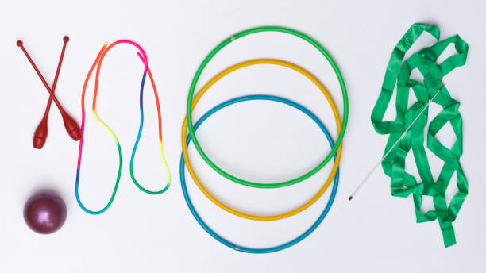
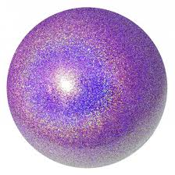
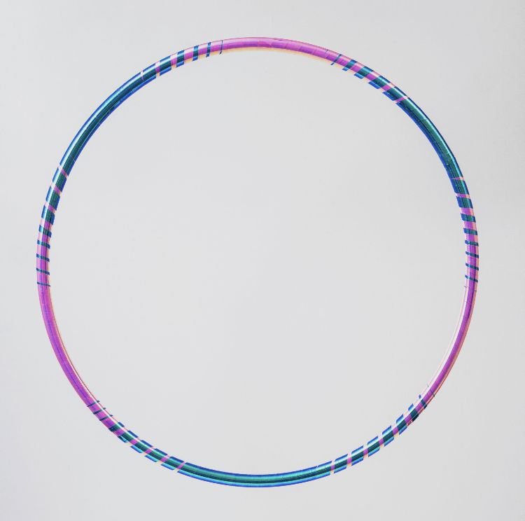
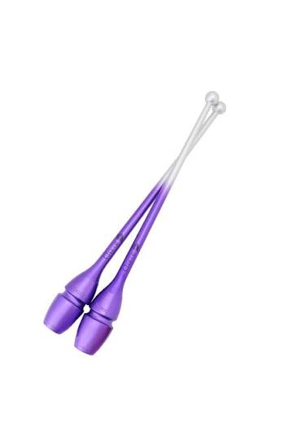
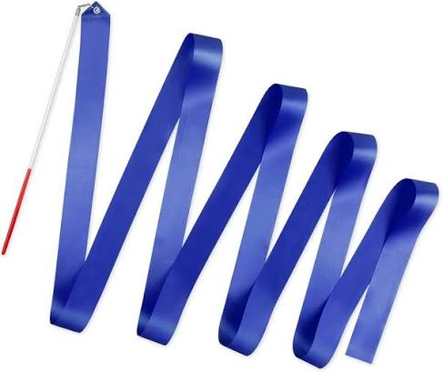
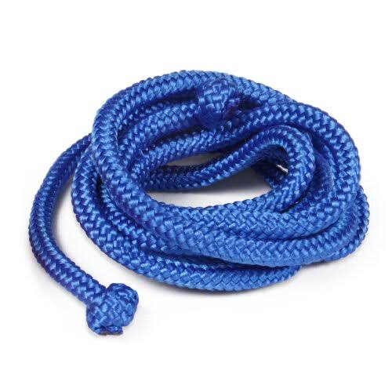

Apparatuses
There are 5 different apparatuses
- Rope
- Ball
- Hoop
- Clubs
- Ribbon
Ball

- Material & Specs: Rubber or synthetic material, with a diameter of 18-20 cm and a minimum weight of 400 g.
- Techniques: Smooth rolls, bounces, throws, and catches. The ball should rest naturally on the hand or body without being gripped by the fingers.
- Demands: Flexibility, grace, and smooth movements.
Hoop

- Material & Specs: Plastic or wood, with an interior diameter of 80-90 cm (proportional to the gymnast's height) and a minimum weight of 300 g.
- Techniques: Rolling, spinning, throwing, catching, swinging, and passing through the hoop.
- Demands: Coordination, flexibility, and control.
Clubs

- Material & Specs: Wood or synthetic material, measuring 40-50 cm long and weighing at least 150 g each.
- Techniques: Small circles, figure eights, rotations, throws, and catches.
- Demands: Good hand-eye coordination, precision, and the ability to use both hands.
Ribbon

- Material & Specs: Satin or similar fabric, at least 6 m long and 4-6 cm wide, attached to a stick measuring 50-60 cm.
- Techniques: Continuous movements that create waves, spirals, and circles in the air.
- Demands: Coordination, flexibility, and good control of the ribbon.
Rope

- Material & Specs: Hemp or synthetic fibers, cut and sized proportionally to the gymnast's height.
- Techniques: Jumping, skipping, swinging, spinning, and throwing the rope into the air.
- Demands: Speed, agility, and good timing.